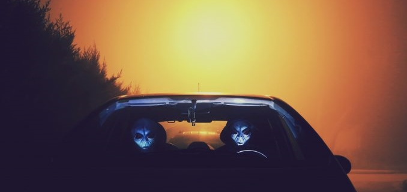

Caso Varginha (1996)
29/02/2024 Caso Varginha (1996): Em Varginha, Minas Gerais, relatos surgiram sobre uma criatura estranha avistada por várias testemunhas. Descrições como alta, com pele marrom, olhos grandes e vermelhos. O evento ganhou destaque na mídia e gerou especulações sobre uma possível nave alienígena.
Leia mais...